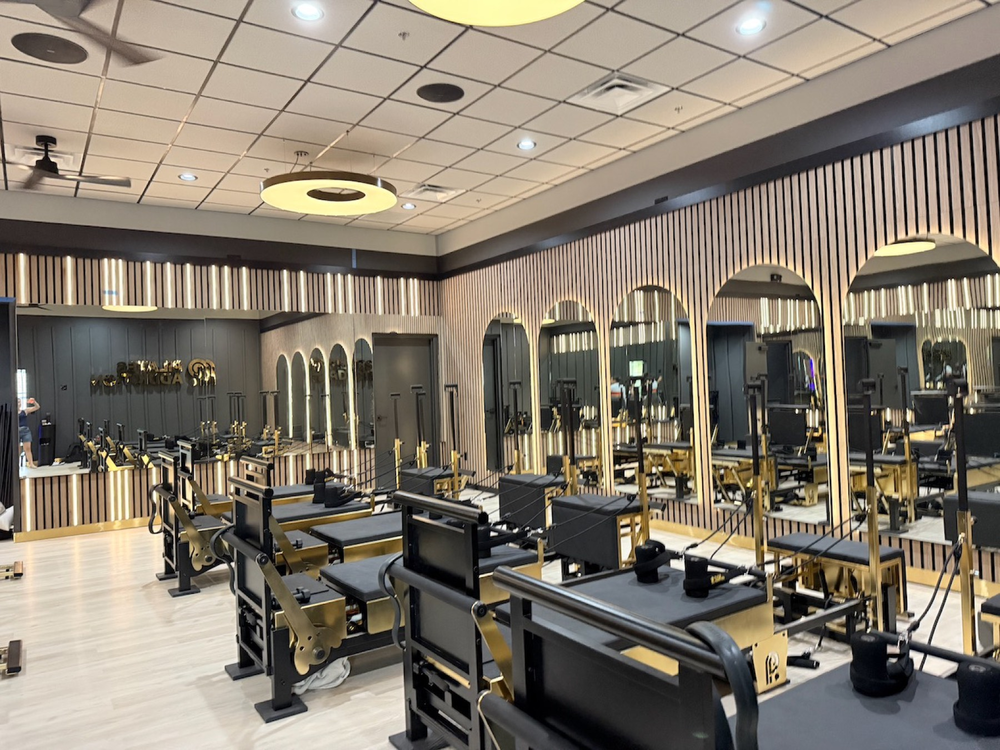
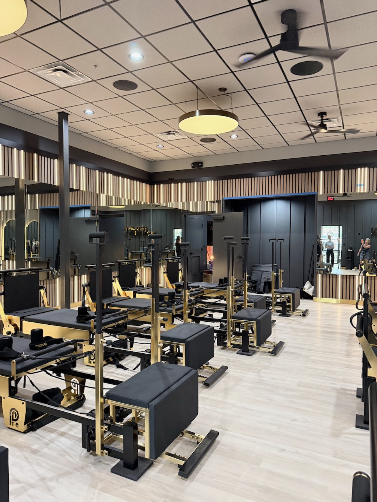
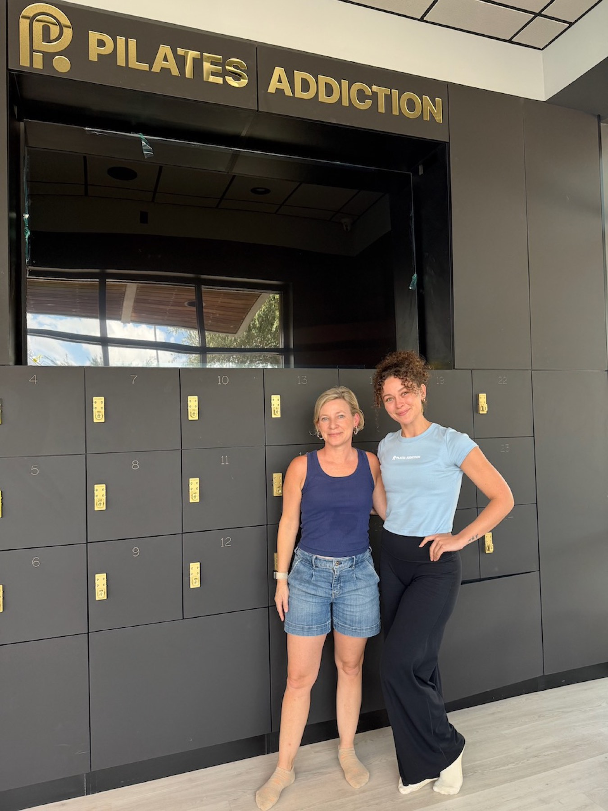

Let me start with a confession: I have never been a Pilates person.
I like the idea of Pilates. I like the idea the way I like the idea of drinking a gallon of water a day or folding laundry the moment it comes out of the dryer. It sounds great. It's clearly good for me. And every time I've actually tried it, I've spent 50 minutes shaking on a machine while a very calm instructor says "just a few more" and my legs file a formal complaint.
Which, if I'm honest, is probably the exact reason I should be doing it.
The dentist detour
Here's how it happened. I was taking my son to the dentist and noticed that Pilates Addiction — the new studio that opened in Steiner in August — was right there, so I did what any nosy neighbor with a few minutes to kill would do. I popped my head in to check it out.
And immediately ran into an acquaintance, who looked at me, lit up, and asked if I wanted to jump into one of their test classes. Like, right then.
I looked down at myself. Jean shorts. A tank top. Nothing about my outfit said "core work." I was dressed to sit in a waiting room and scroll my phone.
I said something like, "Oh, I'm not really prepared..." and they said something like, "You're fine, come on," and reader, I went.

The part where I got converted
I absolutely loved it.
I'm not sure what I expected — maybe the same shaky, humbling, why-does-this-hurt experience I've had before — and, okay, it was humbling. But it was also fun. The instructor was fantastic: clear, encouraging, and quick to adjust my form without making me feel like the new kid who wandered in off the street (which I was, in jean shorts). The class moved. The lights were low, the music was going, and somewhere in the middle of it I realized I wasn't watching the clock. I was just doing it.
So I came back for a second test class. Different instructor, same experience: excellent, attentive, and totally on it.
And then I signed up on the spot. Which, for a person who has spent years politely declining Pilates, is a fairly dramatic turn of events.

What I loved
The space. It's beautiful. Dark walls, gold accents, arched mirrors, those glowing wood-slat panels — it feels like a boutique studio you'd find in a much bigger city, and it's right here in Steiner.
The instructors. Both of the ones I've had have been fantastic. Knowledgeable, warm, and genuinely paying attention to what everyone in the room is doing.
The equipment. Brand new, high-end reformers, and lots of them. Everything feels solid and well-designed.
The vibe. This is the part I can't quite capture in photos. When the lights go down and the class gets going, the room has a mood to it. It's energizing without being loud.

A quick disclaimer on the photos
I took these when the studio was still putting on its finishing touches, so a few details weren't fully done yet. And more importantly: these pictures do not do the place justice. The real magic happens in class, when the lights are low and the whole room takes on this moody, glowy, focused feel that my phone camera simply could not handle. Go see it for yourself.
The bottom line
Pilates Addiction converted me. I walked in as a lifelong Pilates skeptic, dressed for a dentist waiting room, and I walked out as someone who is now committed to working it into my weekly routine — right alongside the lifting I already do. It's a fantastic addition to Steiner, and if you've been "meaning to try Pilates" for as long as I have, consider this your sign.
Just maybe wear leggings.
If you want to go
Pilates Addiction – Steiner Ranch
5145 RR 620, Suite G-170, Austin, TX 78732 (free parking)
512-593-6212 · steinerranch@pilatesaddiction.com
pilatesaddiction.com/location/steiner-ranch · Porch Project directory listing
Classes: IGNITE (30-min intro for newcomers), CORE+ (50-min full-body strength and core), MAX (50-min high-intensity), and MOBILITY RX (50-min flexibility and functional strength). Everything runs on their Aurum reformers — the black-and-gold machines in the photos.
Memberships: They're offering limited founding-member pricing while it lasts — details are on their site. Book through their app or the website.